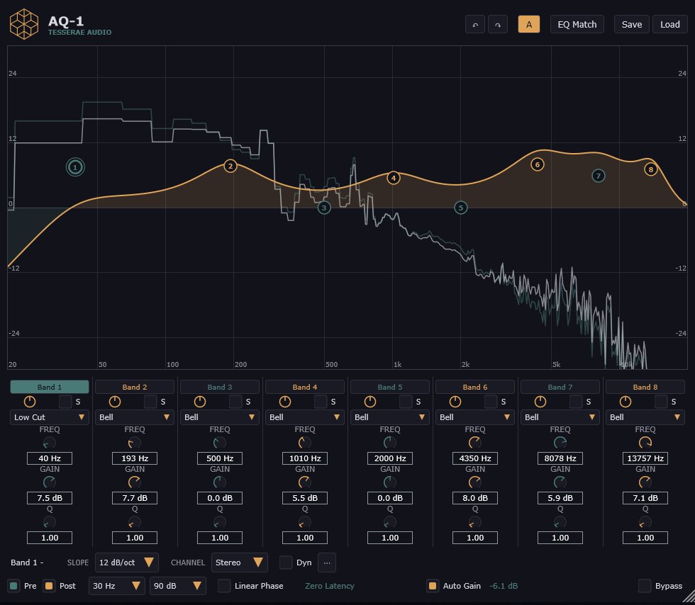

AQ-1
A complete multi-band equalizer, built for real use in mixing and mastering. Free, no account, no license.

Everything you need, nothing you don't
A solid foundation (filtering, interactive curve, spectral analysis) plus advanced tools when you need them.
8 bands
Eight independent bands, each with its own filter type, toggled on or off on the fly.
Every filter type
Bell, Low Shelf, High Shelf, Low Cut, High Cut, Notch, Band Pass - the full vocabulary of a pro EQ.
Adjustable slopes
From 6 to 48 dB/octave on cuts, for filtering as gentle or as steep as you need.
Mid/Side, Left/Right
Each band can target Stereo, Mid, Side, Left, or Right independently of the others.
Linear Phase mode
Linear-phase processing for when phase purity matters more than latency.
Spectrum analyzer
Real-time pre/post visualization, overlaid directly on the response curve.
Dynamic EQ + sidechain
Threshold, ratio, attack/release per band. External trigger for targeted de-essing or resonance control.
Auto Gain
Automatic level compensation after EQ, based on the shape of the curve.
EQ Match
Capture your signal's spectrum, load a reference, and let AQ-1 match the tone.
Interactive curve
Create, move, and edit each band directly on the curve: frequency, gain, Q, filter type.
Presets
Save and reload your settings, compare two versions in one click (A/B).
Undo/redo
Undo or redo your settings without leaving the plugin, just like your DAW.